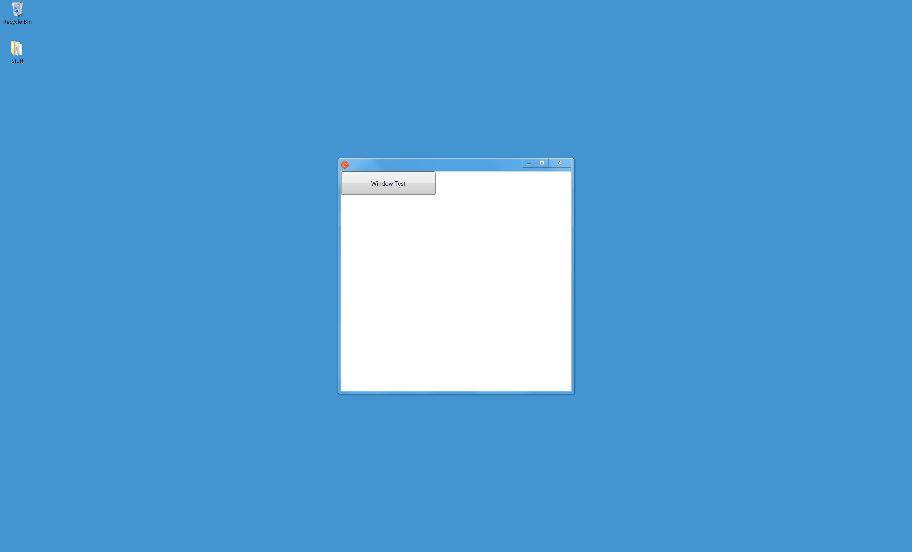
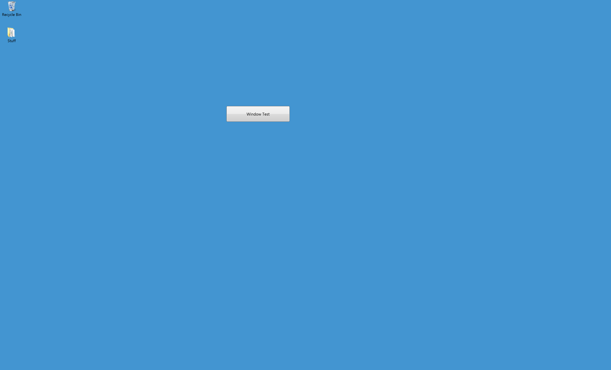
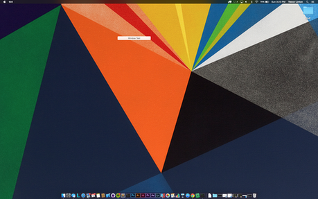
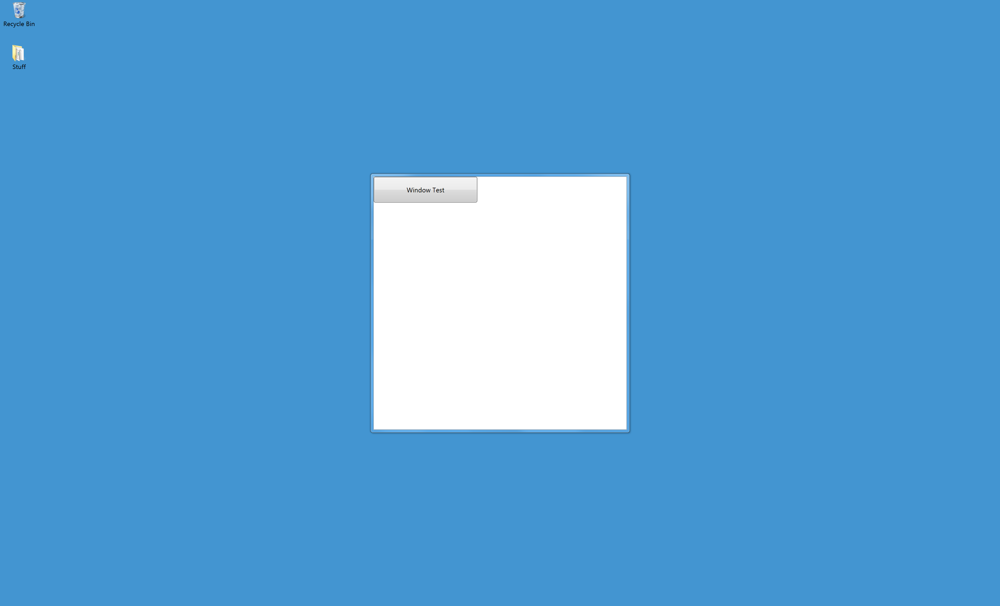
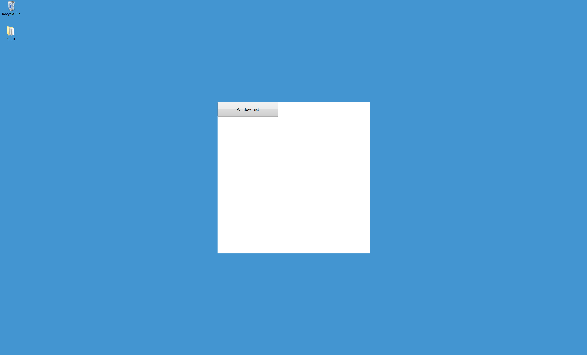
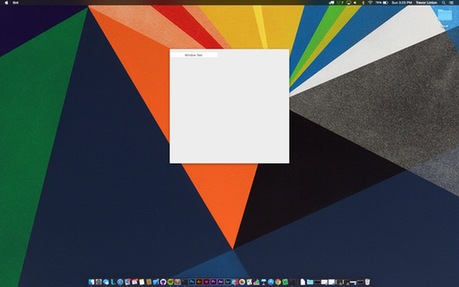
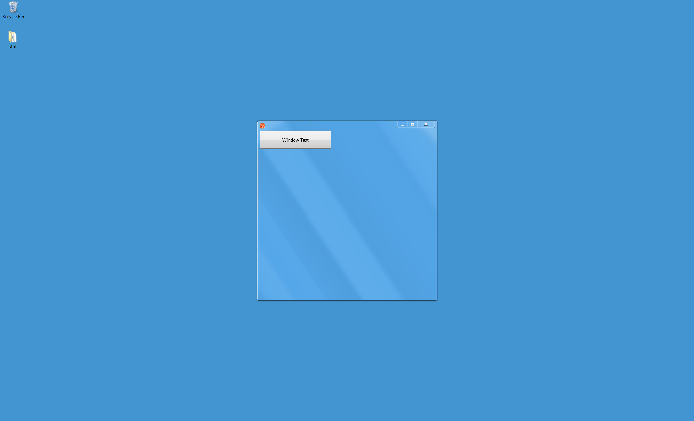
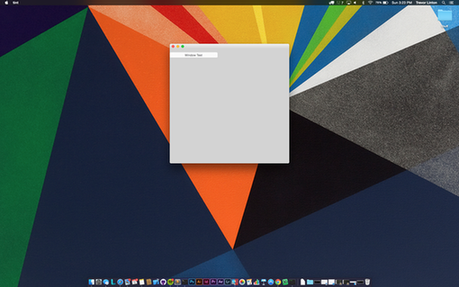

Window Styles and Behaviors
Tint supports a variety of options to customize a windows appearance. One important note about windows is they are not visible until Window.visible is set to true.
Placement
Making a Window Visible or Hidden
Making the window visible or hidden simply uses the Window.visible property. This accept either true or false for a value. Note that when a window is initially created its not visible (e.g., Window.visible == false).
Changing the Height, Width and Position
Changing the height and width is done in logical pixel units.
require('Common');
var win = new Window();
win.height = 500; // change the height to 800
win.width = 200; // change the width to 200
win.visible = true; // now show the window.Notice that the windows height and width were set before it was made visible, this is so the user does not see the change in the width and height, in other words; this is done while the window is not visible (the default value).
require('Common');
var win = new Window();
win.visible = true; // show the window, let the user see the w/h change.
win.height = 200; // change the height to 800
win.width = 500; // change the width to 200Animating the Height and Width
The placement and size of the window can be animated using the property Window.animateOnPositionChange and the property Window.animateOnSizeChange. These are both true or false values (boolean) that when set to true will animate the window to the new position or size based on default values provided by the OS.
From our example above we can create an animated window change by setting the Window.animateOnSizeChange to true prior to setting the width or height property.
require('Common');
var win = new Window();
win.animateOnSizeChange = true;
win.visible = true; // show the window, animate its size change.
win.height = 200; // change the height to 800
win.width = 500; // change the width to 200Frame Decorations
Creating a Normal Frame
This is the regular window frame created by default.
require('Common');
var win = new Window();
var btn = new Button();
btn.left = btn.top = 0;
btn.width = 200;
btn.height = 50;
btn.title = "Window Test";
win.appendChild(btn);
win.visible = true;
Creating a Transparent Frame
To create a transparent frame, set the property backgroundColor to 'transparent' and the property frame to false.
require('Common');
var win = new Window();
win.backgroundColor = 'transparent';
win.frame = false;
var btn = new Button();
btn.left = btn.top = 0;
btn.width = 200;
btn.height = 50;
btn.title = "Window Test";
win.appendChild(btn);
win.visible = true; 
Creating a Floating Frame
A floating frame is a frame with no titlebar or "decorations" (buttons) but can be resized. A floating frame can be useful for displaying information ona n interactive panel but not wanting the user to have the capability of moving the frame (or perhaps the movement is controlled in more sophisticated ways). This can be acheived by setting the the property frame to false and ensuring resizable is set to true.
require('Common');
var win = new Window();
win.resizable = true;
win.frame = false;
var btn = new Button();
btn.left = btn.top = 0;
btn.width = 200;
btn.height = 50;
btn.title = "Window Test";
win.appendChild(btn);
win.visible = true;
Creating a Splash Screen
A splash screen is typically used to display information and automatically closes itself. This is useful for displaying loading screens while other activity is on-going. Splash screens cannot be closed, resized or moved and do not have any frame decorations, borders or titlebars. To create a splash screen set the window property frame to false and resizable to false.
require('Common');
var win = new Window();
win.resizable = false;
win.frame = false;
var btn = new Button();
btn.left = btn.top = 0;
btn.width = 200;
btn.height = 50;
btn.title = "Window Test";
win.appendChild(btn);
win.visible = true; 
Creating a Textured Frame
A textured frame typically causes the window content to mix with the frame decorations. This creates a feel of a dialog and less of a content-driven window. This affect can be acheived by setting the textured property to true on the window object.
require('Common');
var win = new Window();
win.textured = true;
var btn = new Button();
btn.left = btn.top = 0;
btn.width = 200;
btn.height = 50;
btn.title = "Window Test";
win.appendChild(btn);
win.visible = true;It's important to note that non-textured windows are the default on Microsoft Windows, on OSX a textured window is the default.
 
Controlling Resizing Behaviors
There are two options when controlling the resizing behavior of an application. The first option is to use the resizable property on the Window object. This is a boolean value that sets whether the window displays a resize control and does not permit the width/height to be changed by the user (e.g., through the menu or otherwise).
The second way is to set the frame of the window to false AND the resizable property to false, then manually draw (and control the windows width and height) when a user interacts with the control. The first option is easier to manage and produce a window that is not resizable, while the second harder option gives you full control over the windows behavior and style.
It's important to point out that both Microsoft and Apple's HCI guidelines suggest not overriding behavior of a window as its non-forward-facing compatible, e.g., if new behaviors that interact with resizing are introduced into the OS an application manually controlling a behavior will begin to seem dated or out of place in the OS.
require('Common');
var win = new Window();
win.resizable = false;
win.frame = false;
win.visible = true;Making a Window Fullscreen
Full screen windows are useful for situations where intense focus on the content of an application is necessary. A full screen window must first be permitted by the application however. This is controlled by the property canBeFullscreen on the window object. Setting this to true changes the behavior of maximizing and restoring the window on OSX Mavericks (and up) in addition to Windows 8.1. It has no affect on the behavior of standard frame controls on Windows 7. Once the window is permitted to be full screen the fullscreen property can be set to true or false to take the window into fullscreen mode or pull it out of fullscreen mode.
Fullscreen and Kiosk Mode
If a menu is not set, the property alwaysOnTop is set to true and the maximize, minimize and restore buttons are disabled (either manually, or through the frame being set to false) THE WINDOW WILL NOT BE ABLE TO BE EXITED OUT BY THE USER THROUGH ANY MEANS. This is whats referred to as "kiosk" mode where the window may not exit through any normal means (even control or command tab will not switch application contexts).
If you accidently set the window in this mode the computer will need to be restarted, so do provide some sort of way of exiting the fullscreen mode (either through a password on the window that will exit it or other means).
Minimizing, Maximizing and Close Buttons
Individual buttons and controls can be disabled while preserving the ability for a window to be closed, minimized or maximized. This may be useful for tool panels and windows that may not need all the frame decorations. The maximizeButton, minimizeButton and closeButton properties on the window object can be used to remove the button from the window frame (on some OS' it shows the button as greyed out).
See the resizable property for disabling the capabilities for a window to be resized, see the frame property for disabling the capabilities for the window to be moved.
Background Colors
Background colors can be set for the content area of the window. Depending on the OS and its version the background color MAY extend into the frame and window decorations area, but not always. You should not rely on the backgroudn color to be present in any part of the window other than the content area.
If tight styling is needed on the window frame a custom window frame can be built to handle resizing, closing, maximizing and minimizing an application in addition to having a full corner-to-corner style and brand.
Note that Apple and Microsoft strongly discourage using custom window frames as it causes confusion to users as its non-forward-facing compatible, e.g., when upgrading to a new look-and-feel OS version an application implementing a custom frame will begin to seem dated or out of place.
Panels
Panels are special types of windows that can be docked and turned into a regular control. They usually are used for tool windows or other floating behaviors. The Panel object can be used just like the Window object in Tint to produce tool windows.
Dialogs
Dialogs are special types of windows that ask the user for necessary information to continue. They typically are the top most window in a stack of windows and prevent interaction with any other windows until dismissed or an action is taken by the user. Tint provides standard dialogs that can be used to open/save files, ask the user questions on preferences, and other selections such as fonts and colors.
File Dialogs have Special Permissions
File dialogs have a special meaning in operating systems. If an application is sandboxed by the OS or by the user due to security permissions it has no ability to read or write to any files outside of its own application data folder (e.g., its current working directory).
To allow access to open other files or folders File Dialogs can be used to ask the user where they would like to open or save to.
If a user selects a file through a file dialog the application then receives read permission (if the dialog was an open dialog) or read/write permission (if the dialog was a save dialog). Note that this persists through the life of the application. Folder selections are treated in much the same way but the length of access only exists until the application is shut down.
Since this is an OS-level call the operating system suspends all code execution while the file or save dialog is running. This means any callbacks, IO or network events will also go uncaptured! When using a file dialog ensure the design of the application supports being temporarily suspended during the file dialog call.